Curso de Google Documentos › Menú Ver
Video largo · Menú Ver
Google Docs: menú Ver paso a paso (tutorial completo)
Fecha del video: · Programado
Mirá el video completo
Estreno del video: 27/11/2026 · 09:00 (hora Argentina)
¿Sabías que desde el menú Ver de Google Docs podés ocultar la regla, ver los espacios invisibles y pasar a pantalla completa? Este video de menos de 2 minutos lo recorre completo, opción por opción, con capturas reales de un documento de ejemplo («Lista de compras»). Abajo tenés cada parte resumida, con su captura y su atajo de teclado cuando lo tiene.
Capítulos: 00:00 Introducción: dónde está el menú Ver · 00:17 Modo: Edición, Sugerencias y Visualización · 00:41 Comentarios y barra lateral de pestañas y esquemas · 00:57 Diseño de impresión y regla · 01:12 Ecuaciones y caracteres que no se pueden imprimir · 01:29 Pantalla completa y cierre.
1. Dónde está el menú Ver
Abrí tu documento. El menú Ver está arriba, justo al lado de Editar. Hacé clic y se despliegan sus opciones: Modo, Comentarios, Mostrar barra lateral de pestañas y esquemas, Mostrar diseño de impresión, Mostrar regla, Mostrar la barra de herramientas de ecuaciones, Mostrar caracteres que no se pueden imprimir y Pantalla completa.
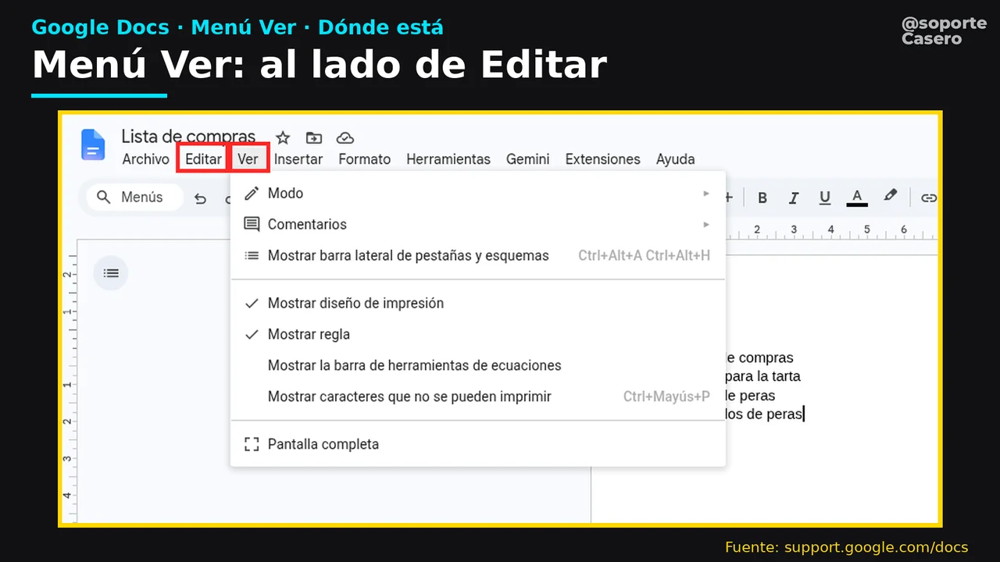
2. Modo: Edición, Sugerencias y Visualización
Ver → Modo tiene tres opciones. Edición («Editar documento directamente») es el modo normal. En Sugerencias («Los cambios se convierten en sugerencias») lo que escribís se ve en otro color y lo que borrás queda tachado, hasta que el propietario acepta o rechaza la sugerencia.
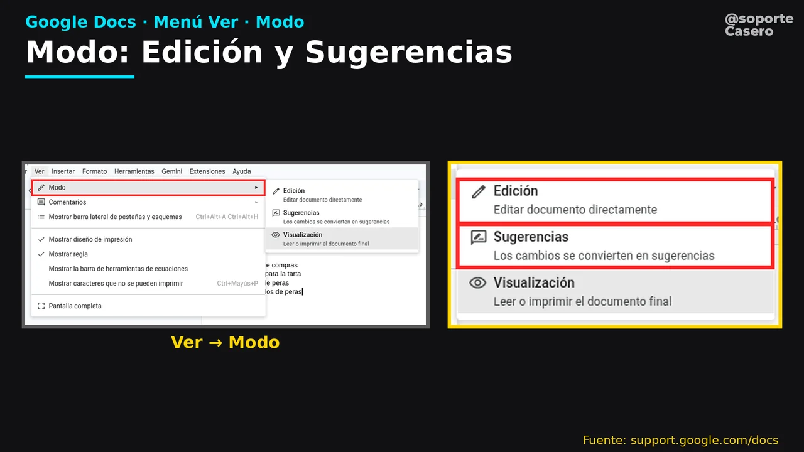
Visualización («Leer o imprimir el documento final») es para leer sin tocar nada: desaparece la barra de herramientas y aparece el aviso Estás viendo.
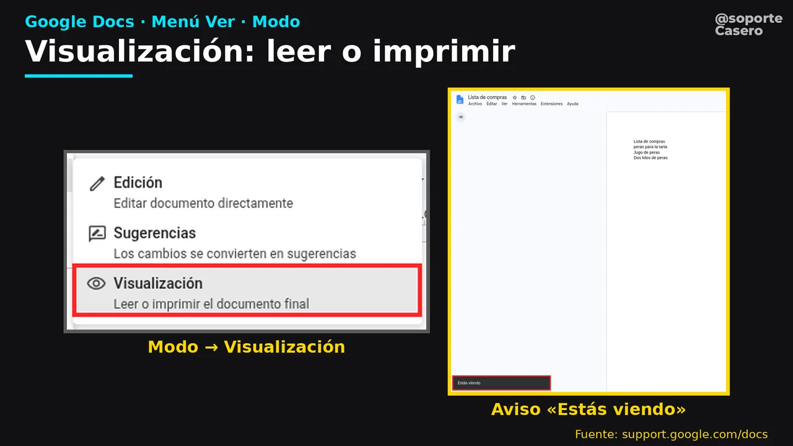
Para volver, entrá otra vez en Ver → Modo → Edición y aparece el aviso Estás editando. Ojo: mientras estás en Visualización, el menú Ver muestra menos opciones.
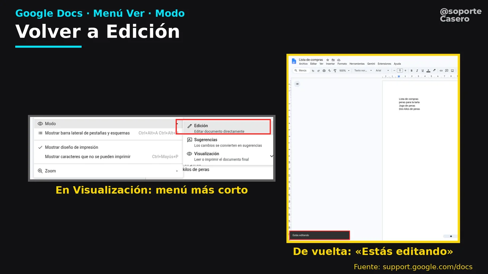
3. Comentarios y barra lateral de pestañas y esquemas
Ver → Comentarios cambia cómo se ven los comentarios al costado del documento: Ocultar comentarios (Ctrl + Alt + Mayús + J) los oculta y cierra el panel; Minimizar comentarios los reduce a íconos; Desplegar comentarios los muestra completos con sus respuestas, y Mostrar todos los comentarios (Ctrl + Alt + Mayús + A) abre el panel de comentarios.
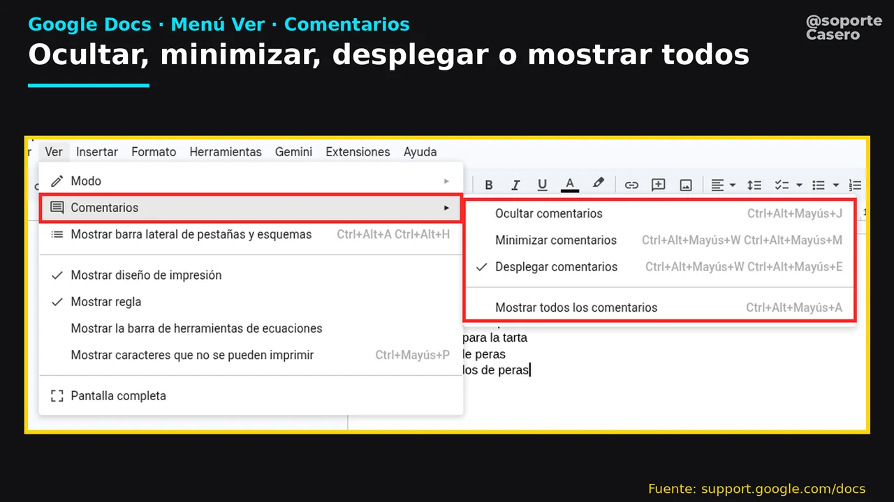
Ver → Mostrar barra lateral de pestañas y esquemas (Ctrl + Alt + A, Ctrl + Alt + H) abre a la izquierda el panel Pestañas del documento. Ahí ves tus pestañas y los títulos que agregues, y con un clic saltás a esa sección.
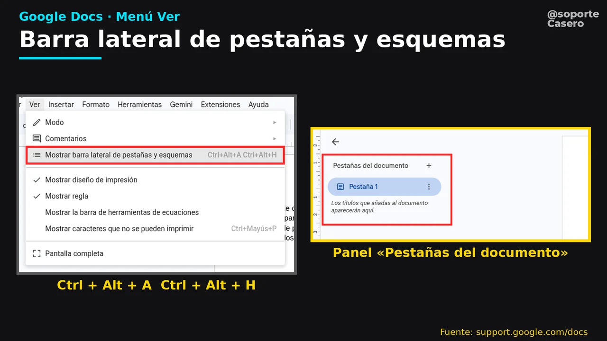
4. Diseño de impresión y regla
Ver → Mostrar diseño de impresión muestra los encabezados, pies de página y márgenes entre páginas como quedarían al imprimir (solo en documentos con formato de páginas). En un documento corto como el del ejemplo casi no se nota: lo desactivamos y lo volvimos a activar.
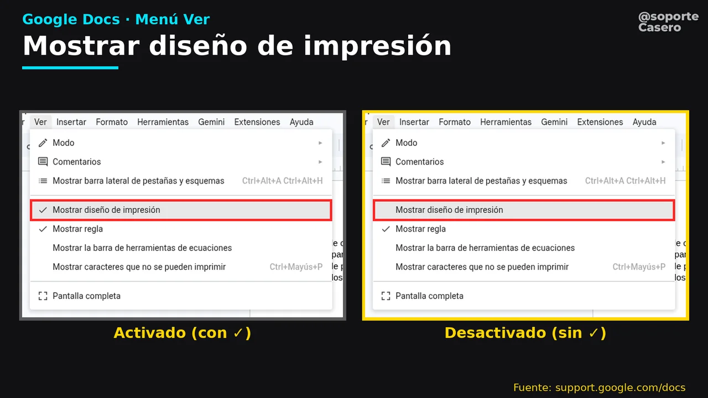
Ver → Mostrar regla: las reglas te ayudan a alinear texto, imágenes y tablas. Si la desmarcás, desaparece la regla de arriba y la del costado; para que vuelvan, la marcás de nuevo.
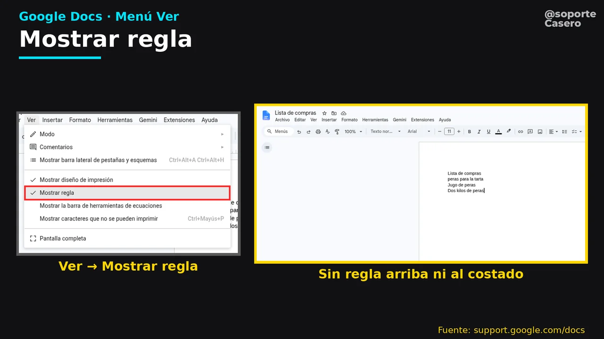
5. Ecuaciones y caracteres que no se pueden imprimir
Ver → Mostrar la barra de herramientas de ecuaciones suma, debajo de la barra de herramientas, el botón Nueva ecuación y menús de símbolos, como letras griegas, operaciones, relaciones y flechas.
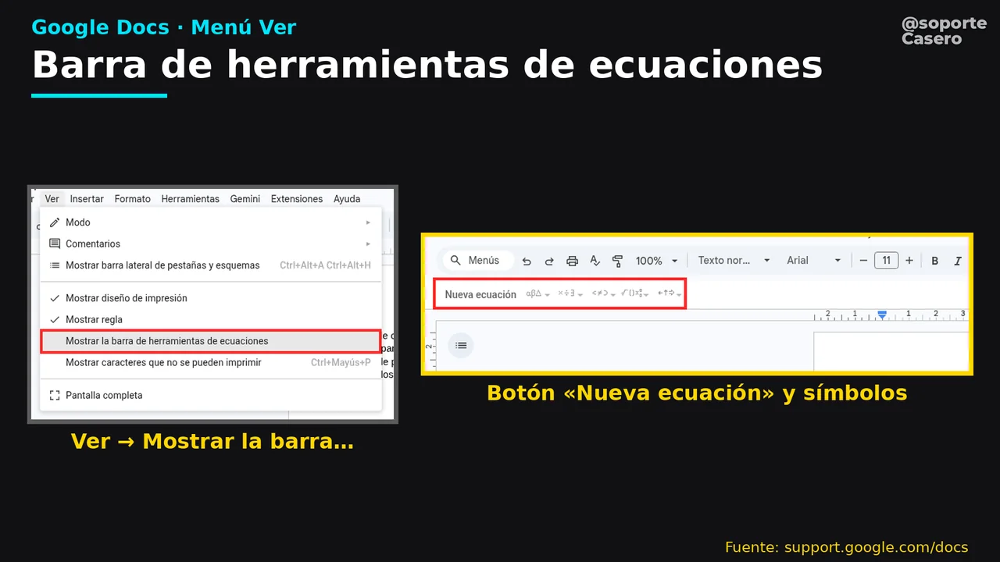
Ver → Mostrar caracteres que no se pueden imprimir (Ctrl + Mayús + P) marca en azul los espacios (·) y los saltos de párrafo (¶), entre otros. Sirve para revisar el formato; no salen al imprimir.
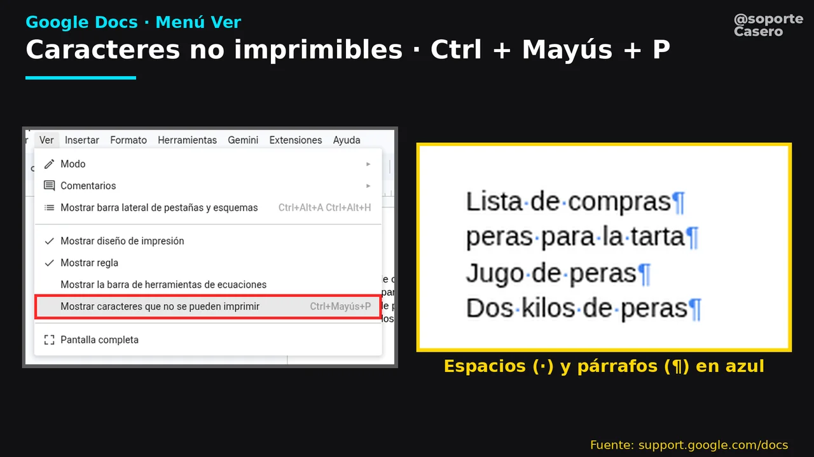
6. Pantalla completa
Ver → Pantalla completa oculta la barra de menús y la de herramientas para que te concentres en el texto. Para salir, apretá Esc: el mismo Docs te lo recuerda con el aviso «Los controles están ocultos. Pulsa Esc para mostrarlos».
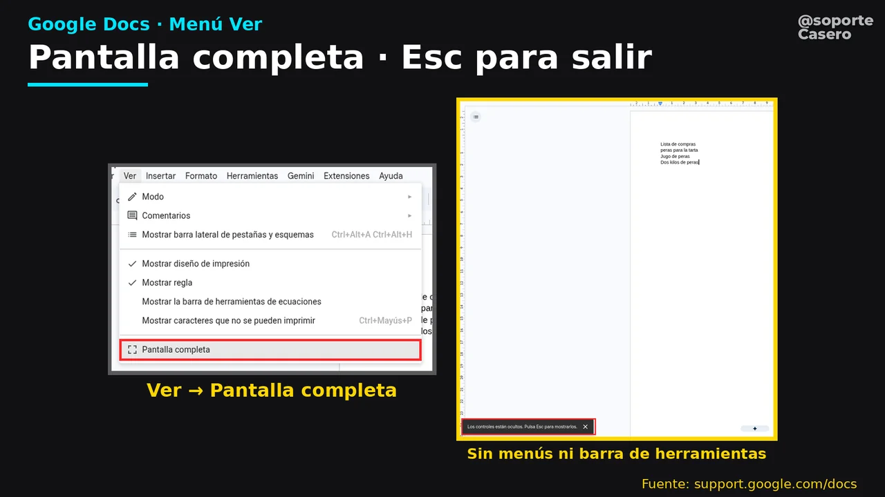
Lo que sigue: los Shorts de las opciones del menú Ver se publican enlazados a este video largo. Después sigue el Google Docs: menú Insertar paso a paso. Mirá el calendario. ¿Te perdiste el anterior? Google Docs: menú Editar paso a paso.
Fuentes oficiales (Ayuda de Editores de Documentos de Google):
- https://support.google.com/docs/answer/6033474?hl=es-419
- https://support.google.com/docs/answer/65129?hl=es-419
- https://support.google.com/docs/answer/15499791?hl=es-419
- https://support.google.com/docs/answer/6367684?hl=es-419
- https://support.google.com/docs/answer/160749?hl=es-419
- https://support.google.com/docs/answer/99753?hl=es-419
Capturas propias en un documento de ejemplo («Lista de compras»). El video usa voz generada con IA.